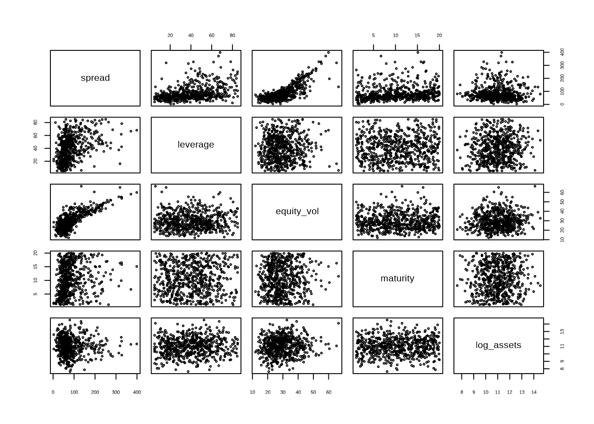
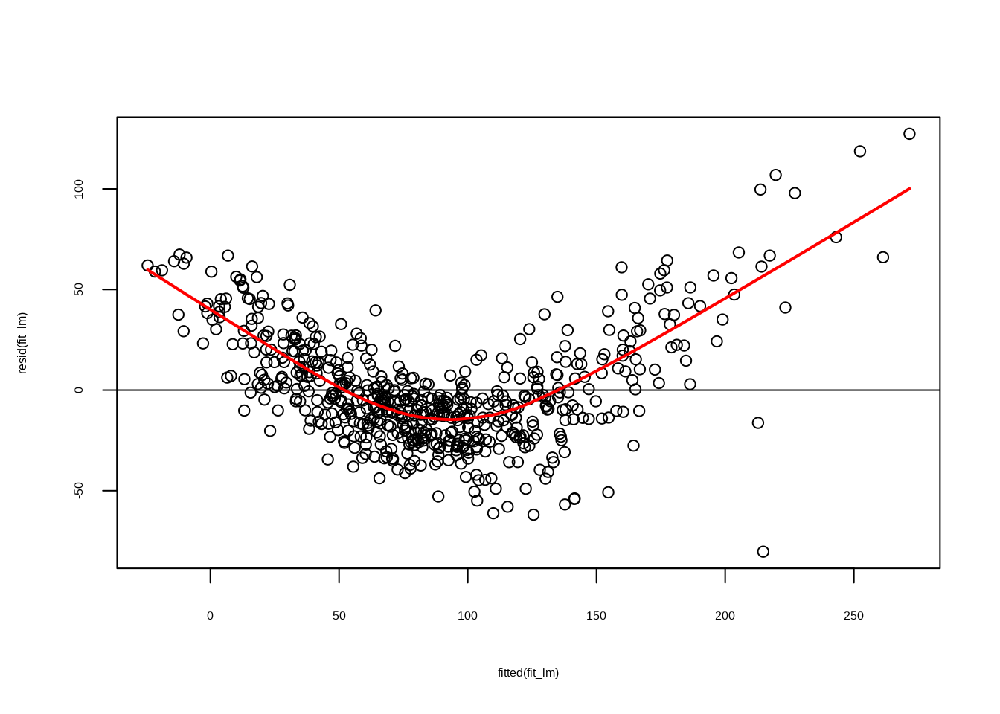
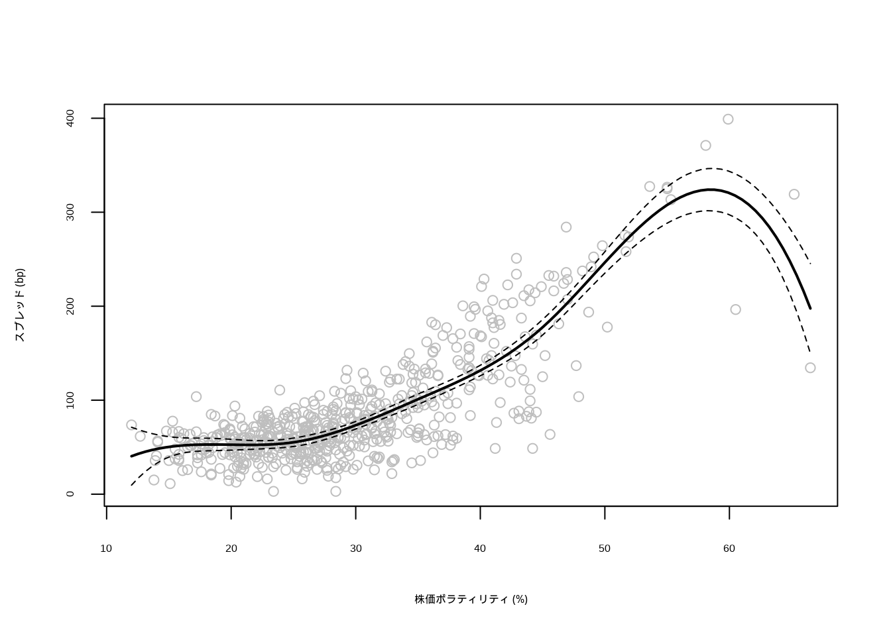
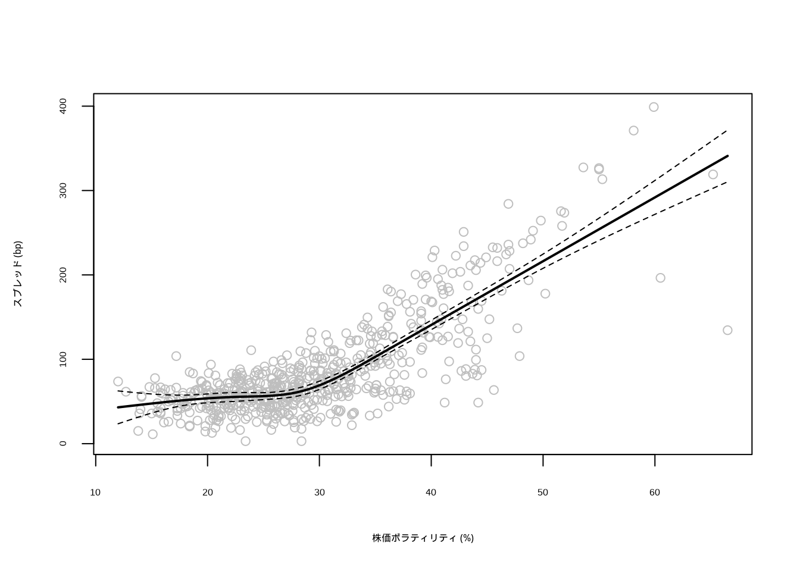
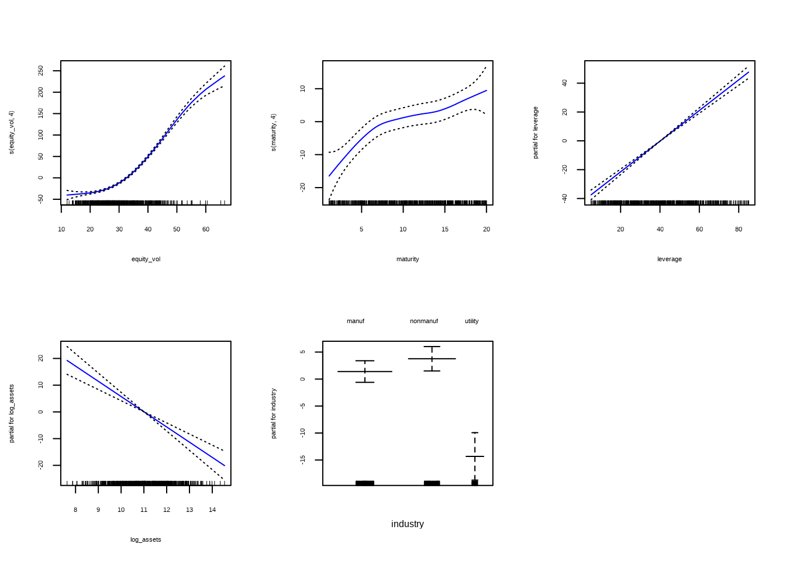
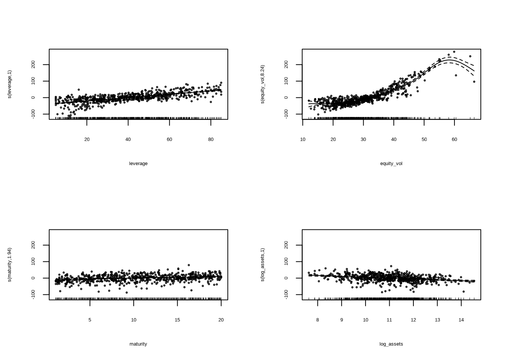
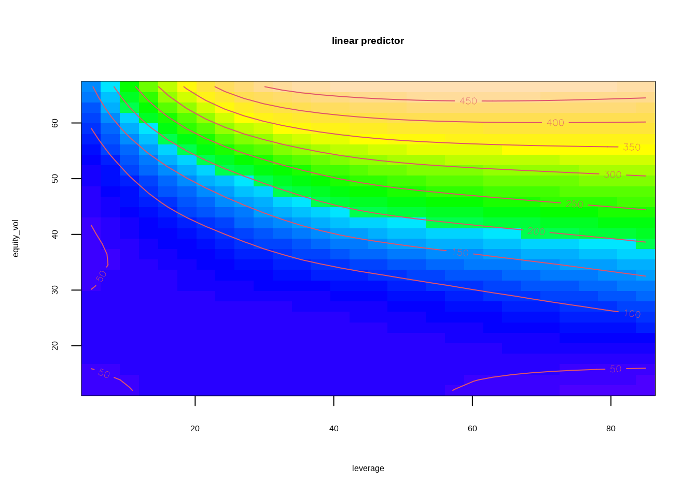
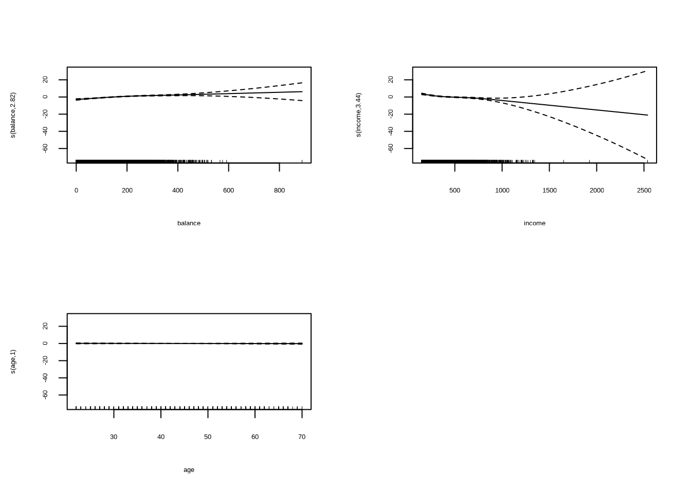
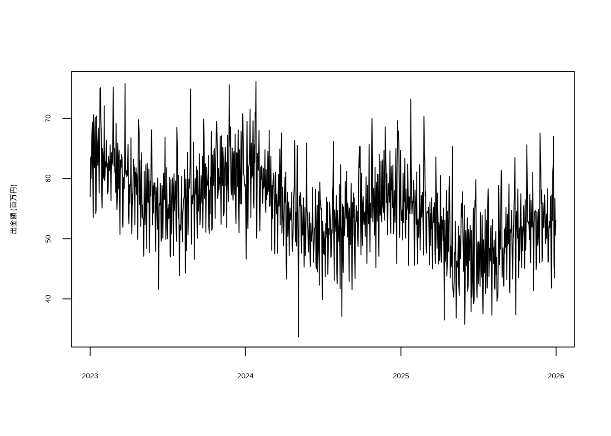
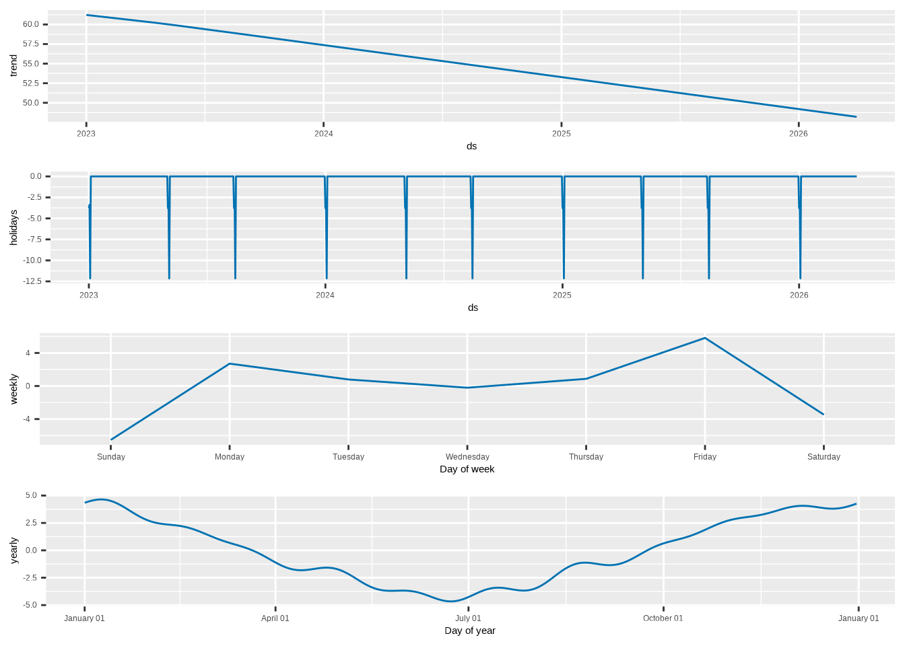

Chapter 5 一般化加法モデル (GAM)
本章の内容は, 授業の R 演習スクリプト R_gam_dist.R に対応する.
使用するデータは, いずれも授業用に作成した仮想データである.
スクリプトの構成は, 参考書 ISLR2 の第7章 (Lab) を参考にした.
本章では, GAMを実行するパッケージとして, (参考書ISLRが使用している) gam, およびmgcvを紹介する. しかし, 後述のように, 二つのパッケージを同時に読み込むと プログラムの一部が正常に動作しなくなる可能性があるため, 一つのプログラムの中ではどちらか一方のみを使用するのが安全である. 特段の理由がなければ, mgcvのみを使用するのが良い.
- mgcvの方が理論的により適切な計算を行っている (後述).
さらに,
- mgcvの方が, より多様な機能を持っている. 例えば,
- パッケージmgcvの関数
gam()は, 説明変数間の交互作用をモデルに 取り入れられるなど柔軟性に富む. - パッケージmgcvの関数
s()は, 多様な平滑化項を指定することができる.
- パッケージmgcvの関数
5.1 データ: 社債の信用スプレッド (仮想)
- bond_spread.csv, 600銘柄
- spread: 信用スプレッド (国債利回りとの差, bp) (目的変数)
- leverage: 発行体の負債/総資産 (%)
- equity_vol: 発行体の株価ボラティリティ (年率, %)
- maturity: 残存年数 (年)
- log_assets: 発行体の総資産 (対数)
- industry: 業種 (manuf: 製造業, nonmanuf: 非製造業, utility: 電力・ガス)このデータは, 構造型モデル (Merton モデル) の考え方に基づいて作成した. すなわち, 発行体のレバレッジと株価ボラティリティが高いほど倒産確率が高く, スプレッドは「非線形に」拡大する.
bond <- read.csv("class/bond_spread.csv")
bond$industry <- factor(bond$industry)
summary(bond)
#> spread leverage equity_vol maturity
#> Min. : 3.00 Min. : 5.00 Min. :12.00 Min. : 1.10
#> 1st Qu.: 51.50 1st Qu.:24.07 1st Qu.:22.90 1st Qu.: 6.00
#> Median : 68.60 Median :40.20 Median :28.20 Median :10.40
#> Mean : 85.79 Mean :40.21 Mean :29.61 Mean :10.52
#> 3rd Qu.: 99.08 3rd Qu.:54.52 3rd Qu.:35.00 3rd Qu.:15.10
#> Max. :399.00 Max. :85.00 Max. :66.50 Max. :20.00
#> log_assets industry
#> Min. : 7.63 manuf :273
#> 1st Qu.:10.17 nonmanuf:238
#> Median :11.01 utility : 89
#> Mean :11.01
#> 3rd Qu.:11.84
#> Max. :14.54
pairs(bond[, 1:5], cex = 0.4)
まず, 線形回帰を当てはめ, 残差プロットを確認する.
fit_lm <- lm(spread ~ leverage + equity_vol + maturity + log_assets + industry, data = bond)
summary(fit_lm)
#>
#> Call:
#> lm(formula = spread ~ leverage + equity_vol + maturity + log_assets +
#> industry, data = bond)
#>
#> Residuals:
#> Min 1Q Median 3Q Max
#> -80.278 -17.984 -4.935 13.928 127.398
#>
#> Coefficients:
#> Estimate Std. Error t value Pr(>|t|)
#> (Intercept) -44.45709 11.21034 -3.966 8.21e-05 ***
#> leverage 1.05497 0.05888 17.918 < 2e-16 ***
#> equity_vol 4.92080 0.12794 38.463 < 2e-16 ***
#> maturity 1.08810 0.21488 5.064 5.49e-07 ***
#> log_assets -6.14400 0.95746 -6.417 2.85e-10 ***
#> industrynonmanuf 2.64075 2.46991 1.069 0.285
#> industryutility -18.36033 3.40994 -5.384 1.05e-07 ***
#> ---
#> Signif. codes: 0 '***' 0.001 '**' 0.01 '*' 0.05 '.' 0.1 ' ' 1
#>
#> Residual standard error: 27.83 on 593 degrees of freedom
#> Multiple R-squared: 0.768, Adjusted R-squared: 0.7657
#> F-statistic: 327.2 on 6 and 593 DF, p-value: < 2.2e-16
plot(fitted(fit_lm), resid(fit_lm))
abline(h = 0)
lines(lowess(fitted(fit_lm), resid(fit_lm)), col = "red", lwd = 2)
\(R^2\)は0.77と高いが, 残差プロットには曲線的なパターン (赤線) が残っている. 説明変数と目的変数の間の関係が線形ではない (非線形性がある) ことを示唆している.
5.2 多項式回帰とスプライン
GAM に進む前に, スプレッドと株価ボラティリティ (equity_vol) の1変数の関係を, 曲線で当てはめる方法を確認する.
vol_lims <- range(bond$equity_vol)
vol_grid <- seq(from = vol_lims[1], to = vol_lims[2], length.out = 100)多項式回帰
# 多項式回帰 (4次の直交多項式)
fit_poly <- lm(spread ~ poly(equity_vol, 4), data = bond)
coef(summary(fit_poly))
#> Estimate Std. Error t value Pr(>|t|)
#> (Intercept) 85.7940 1.291988 66.404662 2.505144e-277
#> poly(equity_vol, 4)1 1086.6979 31.647104 34.337988 2.823902e-143
#> poly(equity_vol, 4)2 352.3344 31.647104 11.133226 2.779507e-26
#> poly(equity_vol, 4)3 -210.7230 31.647104 -6.658525 6.296506e-11
#> poly(equity_vol, 4)4 -185.6627 31.647104 -5.866658 7.383561e-09poly(x, 4)は, 互いに直交する4次までの多項式 (直交多項式) を生成する.
引数raw = TRUEとすると, \(x, x^2, x^3, x^4\) そのもの (非直交) となる.
どちらでも予測値は同じであるが, 個々の係数の値は異なる.
スプライン
library(splines)
# B-スプライン (B-spline): 節点 (knots) を指定
fit_sp <- lm(spread ~ bs(equity_vol, knots = c(25, 35, 45)), data = bond)
pred_sp <- predict(fit_sp, newdata = list(equity_vol = vol_grid), se = TRUE)
plot(bond$equity_vol, bond$spread, col = "grey", xlab = "株価ボラティリティ (%)",
ylab = "スプレッド (bp)")
lines(vol_grid, pred_sp$fit, lwd = 2)
lines(vol_grid, pred_sp$fit + 2 * pred_sp$se, lty = "dashed")
lines(vol_grid, pred_sp$fit - 2 * pred_sp$se, lty = "dashed")
# 自然スプライン (natural spline): 両端を直線に制約. 自由度で指定
fit_sp2 <- lm(spread ~ ns(equity_vol, df = 4), data = bond)
pred_sp2 <- predict(fit_sp2, newdata = list(equity_vol = vol_grid), se = TRUE)
plot(bond$equity_vol, bond$spread, col = "grey", xlab = "株価ボラティリティ (%)",
ylab = "スプレッド (bp)")
lines(vol_grid, pred_sp2$fit, lwd = 2)
lines(vol_grid, pred_sp2$fit + 2 * pred_sp2$se, lty = "dashed")
lines(vol_grid, pred_sp2$fit - 2 * pred_sp2$se, lty = "dashed")
B-スプラインは, 端の方 (データが少ない領域) で曲線が暴れやすく, 信頼区間も広がりやすい. 自然スプラインは, 両端の外側で直線になるという制約を加えることで, これを抑えている.
# 平滑化スプライン (smoothing spline)
plot(bond$equity_vol, bond$spread, cex = 0.5, col = "darkgrey", xlab = "株価ボラティリティ (%)",
ylab = "スプレッド (bp)")
fit_sp3 <- smooth.spline(bond$equity_vol, bond$spread, df = 30) # 自由度 = 30 (柔らかすぎる)
fit_sp4 <- smooth.spline(bond$equity_vol, bond$spread, cv = TRUE) # 交差検証で自由度を選択
fit_sp4$df
#> [1] 11.03971
lines(fit_sp3, col = "red", lwd = 2)
lines(fit_sp4, col = "blue", lwd = 2)
legend("topleft", legend = c("30 DF", paste(round(fit_sp4$df, 1), "DF (CV)")), col = c("red",
"blue"), lty = 1, lwd = 2, cex = 0.8)
平滑化スプラインでは, 曲線の滑らかさを自由度 (df) で調整する.
自由度30 (赤) は柔らかすぎてデータの細かい変動まで追ってしまう (過学習).
交差検証 (cv = TRUE) で選ぶと, 自由度は約11となった (青).
5.3 パッケージgamの利用
# 念のため実行 (mgcv が先にロードされていると誤動作するため)
if ("package:mgcv" %in% search()) detach("package:mgcv", unload = TRUE)
library(gam)関数gam() (パッケージ gam):
- 加法予測子のシンボリック表現や誤差分布を指定の上でGAMを当てはめる
- バックフィッティング・アルゴリズムを採用 (異なる平滑化やフィッティングの方法を混ぜられる)
- 局所回帰 lo() や平滑化スプライン s() をサポート
- usage:
gam(formula, family = gaussian, data, weights, subset, na.action,
start, etastart, mustart, control = gam.control(...),
model = TRUE, method, x = FALSE, y = TRUE, ...)まず, lm()と自然スプラインの基底 ns() を組み合わせることでも, GAM と同様のモデル (各変数の非線形な関数の和) を当てはめられることを確認する.
# lm() + 自然スプライン基底による「GAM」
fit_gam0 <- lm(spread ~ ns(equity_vol, 4) + ns(maturity, 4) + leverage + log_assets +
industry, data = bond)
summary(fit_gam0)
#>
#> Call:
#> lm(formula = spread ~ ns(equity_vol, 4) + ns(maturity, 4) + leverage +
#> log_assets + industry, data = bond)
#>
#> Residuals:
#> Min 1Q Median 3Q Max
#> -164.216 -12.810 1.313 15.129 67.970
#>
#> Coefficients:
#> Estimate Std. Error t value Pr(>|t|)
#> (Intercept) 51.9139 11.7492 4.419 1.18e-05 ***
#> ns(equity_vol, 4)1 12.4131 6.5646 1.891 0.059127 .
#> ns(equity_vol, 4)2 105.6509 6.3445 16.652 < 2e-16 ***
#> ns(equity_vol, 4)3 217.5138 15.9078 13.673 < 2e-16 ***
#> ns(equity_vol, 4)4 300.6032 11.1689 26.914 < 2e-16 ***
#> ns(maturity, 4)1 17.7548 4.6791 3.794 0.000163 ***
#> ns(maturity, 4)2 15.9056 4.7161 3.373 0.000794 ***
#> ns(maturity, 4)3 40.9654 9.6837 4.230 2.71e-05 ***
#> ns(maturity, 4)4 16.8925 4.6438 3.638 0.000299 ***
#> leverage 1.0695 0.0487 21.962 < 2e-16 ***
#> log_assets -5.7176 0.7928 -7.212 1.71e-12 ***
#> industrynonmanuf 2.3577 2.0328 1.160 0.246591
#> industryutility -15.6482 2.8349 -5.520 5.10e-08 ***
#> ---
#> Signif. codes: 0 '***' 0.001 '**' 0.01 '*' 0.05 '.' 0.1 ' ' 1
#>
#> Residual standard error: 22.88 on 587 degrees of freedom
#> Multiple R-squared: 0.8448, Adjusted R-squared: 0.8416
#> F-statistic: 266.2 on 12 and 587 DF, p-value: < 2.2e-16次に, パッケージgamのgam()で, 平滑化スプライン s() を使った GAM を当てはめる.
s()の第2引数は自由度である.
# gam::gam() による GAM (s: 平滑化スプライン, 第2引数は自由度)
fit_gam3 <- gam(spread ~ s(equity_vol, 4) + s(maturity, 4) + leverage + log_assets +
industry, data = bond)
summary(fit_gam3) # → 'Anova for Nonparametric Effects'
#>
#> Call: gam(formula = spread ~ s(equity_vol, 4) + s(maturity, 4) + leverage +
#> log_assets + industry, data = bond)
#> Deviance Residuals:
#> Min 1Q Median 3Q Max
#> -138.3987 -12.7339 0.5897 14.7071 71.7016
#>
#> (Dispersion Parameter for gaussian family taken to be 499.6668)
#>
#> Null Deviance: 1979842 on 599 degrees of freedom
#> Residual Deviance: 293304.3 on 586.9998 degrees of freedom
#> AIC: 5445.949
#>
#> Number of Local Scoring Iterations: NA
#>
#> Anova for Parametric Effects
#> Df Sum Sq Mean Sq F value Pr(>F)
#> s(equity_vol, 4) 1 1182050 1182050 2365.677 < 2.2e-16 ***
#> s(maturity, 4) 1 22725 22725 45.481 3.697e-11 ***
#> leverage 1 254954 254954 510.248 < 2.2e-16 ***
#> log_assets 1 30846 30846 61.732 1.886e-14 ***
#> industry 2 21935 10967 21.949 6.415e-10 ***
#> Residuals 587 293304 500
#> ---
#> Signif. codes: 0 '***' 0.001 '**' 0.01 '*' 0.05 '.' 0.1 ' ' 1
#>
#> Anova for Nonparametric Effects
#> Npar Df Npar F Pr(F)
#> (Intercept)
#> s(equity_vol, 4) 3 107.711 <2e-16 ***
#> s(maturity, 4) 3 2.015 0.1107
#> leverage
#> log_assets
#> industry
#> ---
#> Signif. codes: 0 '***' 0.001 '**' 0.01 '*' 0.05 '.' 0.1 ' ' 1
par(mfrow = c(2, 3))
plot(fit_gam3, se = TRUE, col = "blue") # 各項の形状 (部分効果)
par(mfrow = c(1, 1))
summary()の “Anova for Nonparametric Effects” は, 各平滑化項について「線形の関係で十分か (非線形な部分は不要か)」を検定している.
equity_volの非線形部分は強く有意であるのに対し, maturityの非線形部分は有意ではない.
gam()内で実行されている平滑化スプラインは, モデルの複雑さを示す自由度 (関数s()の2つ目の引数) の大きさで, 実質的に包含関係を表すことができる.
すなわち, モデル間に包含関係 (ネスト, “nested”) がある場合には,
線形モデルの場合と同様に, 関数anova()を適用し,
両者のデータへの当てはまりの悪さ (逸脱度) の差の有意性を調べることで,
モデルを複雑にすることの妥当性を定量的に評価することができる.
なお, モデル間に包含関係がない場合には, これまでと同様, AICやBICの大きさを比較することでモデルを選択すれば良い (パッケージgamを使用したモデル選択については, 以下の注意点を参照).
ここでは, 残存年数 maturity を「入れない」「線形で入れる」「平滑化スプラインで入れる」の3つのモデルを比べる.
fit_gam1 <- gam(spread ~ s(equity_vol, 4) + leverage + log_assets + industry, data = bond)
fit_gam2 <- gam(spread ~ s(equity_vol, 4) + maturity + leverage + log_assets + industry,
data = bond)
anova(fit_gam1, fit_gam2, fit_gam3, test = "F")
#> Analysis of Deviance Table
#>
#> Model 1: spread ~ s(equity_vol, 4) + leverage + log_assets + industry
#> Model 2: spread ~ s(equity_vol, 4) + maturity + leverage + log_assets +
#> industry
#> Model 3: spread ~ s(equity_vol, 4) + s(maturity, 4) + leverage + log_assets +
#> industry
#> Resid. Df Resid. Dev Df Deviance F Pr(>F)
#> 1 591 316928
#> 2 590 296226 1 20702 41.4310 2.539e-10 ***
#> 3 587 293304 3 2922 1.9493 0.1205
#> ---
#> Signif. codes: 0 '***' 0.001 '**' 0.01 '*' 0.05 '.' 0.1 ' ' 1
AIC(fit_gam1, fit_gam2, fit_gam3)
#> df AIC
#> fit_gam1 7 5484.427
#> fit_gam2 8 5445.896
#> fit_gam3 8 5445.949これより, モデル1と2の間には有意水準0.1%で差が見られるが,
2と3の間には (有意水準10%でも) 差は見られない.
AICで比較しても, モデル2と3はほぼ同じで, モデル1より大幅に小さい.
すなわち, この3つのモデルの中では, maturityを線形で加えたモデル2が妥当と言えそうである.
パッケージgamの使用に関する注意点
関数gam::gam()は, R言語の前身であるS言語から継承されてきた古い関数であり,
関数内部における計算 (バックフィッティング) の欠点が指摘されている.
その後, GAMの当てはめのアルゴリズムは今日までに種々提案されており, 次節で解説するパッケージmgcvは, 欠点を改善した それらの一つをRパッケージ化したものである.
また, パッケージgamのgam()の出力はクラス”glm”を継承していることから, 変数選択/モデル選択の際に使用する
関数anova()やAIC()の内部では,
gam()の出力はクラス”glm”のオブジェクトとして処理され, それ自体が不正確さを
もたらす可能性がある.
したがって, gamのgam()の推定結果や,
その出力を使ったモデルの比較や選択は, 信頼性にやや欠ける点に注意が必要である.
補足:
gam の関数 s() は, 外から与える引数 df によって固定された自由度で平滑化スプラインを当てはめる.
一方, mgcv の s() は, データから平滑化パラメータを自動的に推定しつつ, 平滑化スプラインを当てはめる
("有効自由度" (ISLR, p.278) が推定される).
異なる滑らかさを持つモデル同士を比較する場合には, gam は公平なモデル比較をしているとは言えないため, mgcv の使用が良い.5.4 パッケージmgcvの利用
関数gam() (パッケージ mgcv):
- Generalized additive models with integrated smoothness estimation
- 平滑化の程度を自動選択 (GCV や REML)
- usage:
gam(formula, family = gaussian(), data = list(), weights = NULL,
subset = NULL, na.action, offset = NULL, method = "GCV.Cp",
optimizer = c("outer", "newton"), control = list(), scale = 0,
select = FALSE, knots = NULL, sp = NULL, min.sp = NULL, H = NULL,
gamma = 1, fit = TRUE, paraPen = NULL, G = NULL, in.out,
drop.unused.levels = TRUE, drop.intercept = NULL, discrete = FALSE, ...)
- 参考: https://cran.r-project.org/web/packages/mgcv/mgcv.pdf関数名の衝突について
mgcvには, 先に見たgamと同じ名前の関数gam(), s()が
存在することから, 両方を読み込むと衝突 (コンフリクト) が生じる (“名前空間の衝突”と呼ぶ).
Rでは, より後からlibrary()やrequire()で読み込んだパッケージの関数が優先される.
関数の衝突を確認する方法としては, 次のものがある.
関数の優先順位を入れ替える方法 (パッケージgamをmgcvよりも優先する場合) としては,
- 再度
library()を実行する:
detach()でパッケージを外す:
- その都度「パッケージ名::関数名」を使う:
がある. ただし, (3) の方法でも, s()が正しく解釈されないことがあるため, 上述のように, 一つのプログラムではどちらか一方のみを使うのが安全である.
GAM の当てはめ
すべての量的変数に平滑化項 s() を入れた GAM を当てはめる.
method = "REML"は, 平滑化の程度を制限付き最尤法 (REML) で選ぶ指定である.
fit_mg <- gam(spread ~ s(leverage) + s(equity_vol) + s(maturity) + s(log_assets) +
industry, data = bond, method = "REML")
summary(fit_mg) # edf (有効自由度) ≈ 1 なら, ほぼ線形
#>
#> Family: gaussian
#> Link function: identity
#>
#> Formula:
#> spread ~ s(leverage) + s(equity_vol) + s(maturity) + s(log_assets) +
#> industry
#>
#> Parametric coefficients:
#> Estimate Std. Error t value Pr(>|t|)
#> (Intercept) 87.481 1.305 67.025 < 2e-16 ***
#> industrynonmanuf 1.594 1.917 0.831 0.406
#> industryutility -15.636 2.659 -5.881 6.87e-09 ***
#> ---
#> Signif. codes: 0 '***' 0.001 '**' 0.01 '*' 0.05 '.' 0.1 ' ' 1
#>
#> Approximate significance of smooth terms:
#> edf Ref.df F p-value
#> s(leverage) 1.000 1.001 493.10 <2e-16 ***
#> s(equity_vol) 8.244 8.842 325.38 <2e-16 ***
#> s(maturity) 1.936 2.421 18.94 <2e-16 ***
#> s(log_assets) 1.000 1.001 49.97 <2e-16 ***
#> ---
#> Signif. codes: 0 '***' 0.001 '**' 0.01 '*' 0.05 '.' 0.1 ' ' 1
#>
#> R-sq.(adj) = 0.86 Deviance explained = 86.4%
#> -REML = 2695.7 Scale est. = 461.67 n = 600
plot(fit_mg, pages = 1, residuals = TRUE, pch = 1, cex = 0.3, se = TRUE)
summary()の “Approximate significance of smooth terms” のedf (有効自由度) は, 推定された曲線の複雑さを表す.
edfが1に近い leverage と log_assets はほぼ線形, equity_vol (edf ≈ 8.2) は強い非線形性を持つ.
図からも, ボラティリティが高くなるとスプレッドが加速度的に拡大する様子が分かり, 構造型モデルの考え方と整合的である.
交互作用を含めた GAM
mgcvのgam()では, 2変数の関数 (交互作用) も平滑化項として入れられる.
理論的には, 「レバレッジが高く, かつボラティリティが高い」企業でスプレッドが急拡大すると考えられる.
ti()は, 各変数単独の効果 (s()) を除いた, 交互作用部分のみの平滑化項である.
fit_int <- gam(spread ~ s(leverage) + s(equity_vol) + ti(leverage, equity_vol) +
s(maturity) + s(log_assets) + industry, data = bond, method = "REML")
summary(fit_int)
#>
#> Family: gaussian
#> Link function: identity
#>
#> Formula:
#> spread ~ s(leverage) + s(equity_vol) + ti(leverage, equity_vol) +
#> s(maturity) + s(log_assets) + industry
#>
#> Parametric coefficients:
#> Estimate Std. Error t value Pr(>|t|)
#> (Intercept) 88.2904 0.7457 118.395 <2e-16 ***
#> industrynonmanuf -0.1680 1.0924 -0.154 0.878
#> industryutility -17.5770 1.5230 -11.541 <2e-16 ***
#> ---
#> Signif. codes: 0 '***' 0.001 '**' 0.01 '*' 0.05 '.' 0.1 ' ' 1
#>
#> Approximate significance of smooth terms:
#> edf Ref.df F p-value
#> s(leverage) 2.281 2.862 549.98 <2e-16 ***
#> s(equity_vol) 6.770 7.837 1022.91 <2e-16 ***
#> ti(leverage,equity_vol) 12.546 14.307 90.70 <2e-16 ***
#> s(maturity) 3.694 4.572 44.86 <2e-16 ***
#> s(log_assets) 1.009 1.018 174.83 <2e-16 ***
#> ---
#> Signif. codes: 0 '***' 0.001 '**' 0.01 '*' 0.05 '.' 0.1 ' ' 1
#>
#> R-sq.(adj) = 0.955 Deviance explained = 95.7%
#> -REML = 2370.5 Scale est. = 147.84 n = 600
vis.gam(fit_int, view = c("leverage", "equity_vol"), color = "topo", theta = 40) # 3次元プロット

交互作用項は有意で, AICも大きく改善している (5403 → 4735). 3次元プロットからは, レバレッジとボラティリティがともに高い領域で, スプレッドが急に高くなる形が読み取れる.
注意点としては, データが少ない, あるいは存在しない領域 (例えば, レバレッジもボラティリティも極端に高い組合せ) まで面を描いてしまうことから, そうした領域について誤った解釈をしないようにしなければならない.
GAM によるロジット回帰
family = binomialとすれば, 0/1の目的変数に対する GAM (一般化加法ロジットモデル) を当てはめられる.
前章の個人ローン・データで, 各変数の効果が線形 (対数オッズの尺度で) かどうかを調べる.
loan <- read.csv("class/loan_default.csv")
loan$employ <- factor(loan$employ, levels = c("regular", "nonregular"))
fit_lgam <- gam(default ~ s(balance) + s(income) + s(age) + employ, family = binomial,
data = loan, method = "REML")
summary(fit_lgam)
#>
#> Family: binomial
#> Link function: logit
#>
#> Formula:
#> default ~ s(balance) + s(income) + s(age) + employ
#>
#> Parametric coefficients:
#> Estimate Std. Error z value Pr(>|z|)
#> (Intercept) -3.9867 0.2207 -18.068 <2e-16 ***
#> employnonregular 0.6366 0.2632 2.419 0.0156 *
#> ---
#> Signif. codes: 0 '***' 0.001 '**' 0.01 '*' 0.05 '.' 0.1 ' ' 1
#>
#> Approximate significance of smooth terms:
#> edf Ref.df Chi.sq p-value
#> s(balance) 2.817 3.563 83.886 <2e-16 ***
#> s(income) 3.439 4.198 81.576 <2e-16 ***
#> s(age) 1.001 1.001 0.361 0.548
#> ---
#> Signif. codes: 0 '***' 0.001 '**' 0.01 '*' 0.05 '.' 0.1 ' ' 1
#>
#> R-sq.(adj) = 0.195 Deviance explained = 23.8%
#> -REML = 335.65 Scale est. = 1 n = 2000
plot(fit_lgam, pages = 1, se = TRUE) # 縦軸は対数オッズの尺度
balanceとincomeはedfが1より大きく, 対数オッズとの関係にも非線形性が見られる.
ageはedf ≈ 1 で, 有意でもない (前章のロジット回帰の結果と整合的).
(自主課題)
- 以上のGAMの実行結果を解釈してみよう.
ti(leverage, equity_vol)の代わりに, 他の変数ペア (例:ti(leverage, maturity)) の交互作用も調べてみよう.
5.5 パッケージprophetの利用
時系列予測を目的とした関数および補助関数のパッケージである. 非線形のトレンドと季節性・休日効果を足し合わせる加法モデルであり, GAM の考え方を時系列予測に応用したものと言える.
prophet:
- 非線形のトレンド + 年次・週次・日次の季節性 + 休日効果, の加法モデルに基づいて時系列を予測
- 強い季節性があり, 数シーズン分の過去データを持つ時系列に対して良く機能
- 欠損値やトレンドの変化に対して頑健. 通常, 外れ値もうまく処理する
- 出所: https://facebook.github.io/prophet/docs/quick_start.html#r-apiデータ: ATM出金額 (仮想)
- atm_daily.csv, ある地方銀行の ATM 出金額 (日次, 百万円), 2023/1/1〜2025/12/31
- date: 日付
- amount: 出金額 (百万円)atm <- read.csv("class/atm_daily.csv")
atm$date <- as.Date(atm$date)
plot(atm$date, atm$amount, type = "l", xlab = "", ylab = "出金額 (百万円)")
prophet による予測
休日効果として, 年末年始, ゴールデンウィーク, お盆の連休を指定する.
# 休日 (連休) の指定: 年末年始, GW, お盆
hol <- data.frame(holiday = "long_holiday", ds = as.Date(c(paste0(2023:2026, "-01-01"),
paste0(2023:2026, "-05-03"), paste0(2023:2026, "-08-13"))), lower_window = 0,
upper_window = 2) # 当日から2日後までを休日効果とするprophet()に与えるデータフレームの列名は, 日付をds, 値をyとする必要がある.
# prophet モデルの推定
atm_df <- data.frame(ds = atm$date, y = atm$amount)
atm_ppht <- prophet(atm_df, holidays = hol, yearly.seasonality = TRUE, weekly.seasonality = TRUE,
daily.seasonality = FALSE)
# 予測する日付の生成 (90日先まで) と予測
dates_ft <- make_future_dataframe(atm_ppht, periods = 90)
atm_forecast <- predict(atm_ppht, dates_ft)
tail(atm_forecast[c("ds", "yhat", "yhat_lower", "yhat_upper")])
#> ds yhat yhat_lower yhat_upper
#> 1181 2026-03-26 48.69645 43.56687 53.47653
#> 1182 2026-03-27 53.53165 48.86172 58.32532
#> 1183 2026-03-28 44.12946 39.60808 48.93103
#> 1184 2026-03-29 40.95480 36.16324 45.69445
#> 1185 2026-03-30 50.06196 45.54247 54.98011
#> 1186 2026-03-31 48.02466 43.47958 52.91538
plot(atm_ppht, atm_forecast)

各成分の図から, 連休の前後の出金額の変化 (休日効果), 曜日による違い (週次の季節性), 年間の変動 (年次の季節性) が分離されていることが分かる.
注) 給料日 (25日前後) の効果は, 上の成分には現れない.
add_regressor()で「25日前後ダミー」を説明変数に加えると改善する (自主課題).
prophet の主な引数
- growth: "linear" (デフォルト), "logistic", "flat"
- changepoints (変化点): 日付ベクトルをユーザー指定 or 潜在的な変化点の自動選択 (デフォルト)
- n.changepoints (変化点の数): 25 (デフォルト)
- yearly.seasonality (年次季節性): "auto" (デフォルト), TRUE, FALSE, 生成する Fourier 項の数
- weekly.seasonality (週次季節性): 同上
- daily.seasonality (日次季節性): 同上
- holidays (休日の指定): なし (デフォルト)
- seasonality.mode (季節性の入り方): "additive" (加法的, デフォルト), "multiplicative" (乗法的)